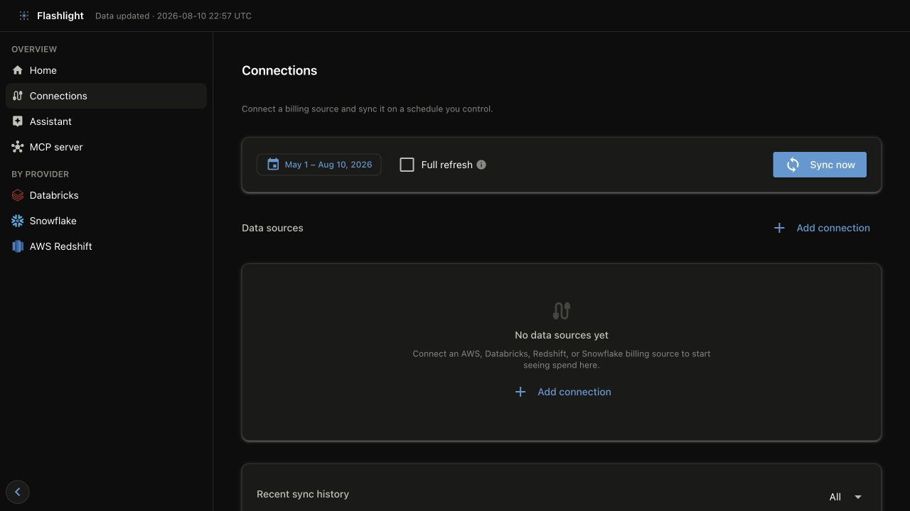
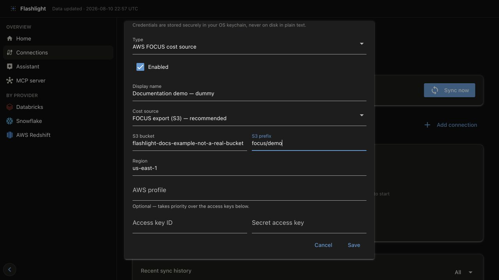
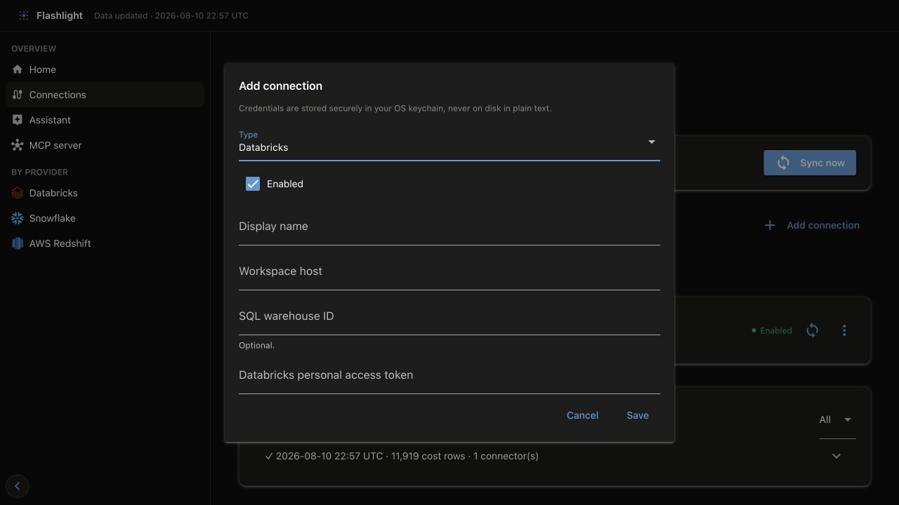
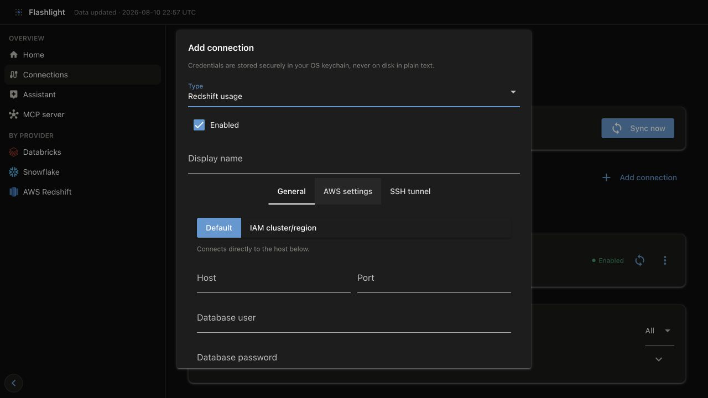
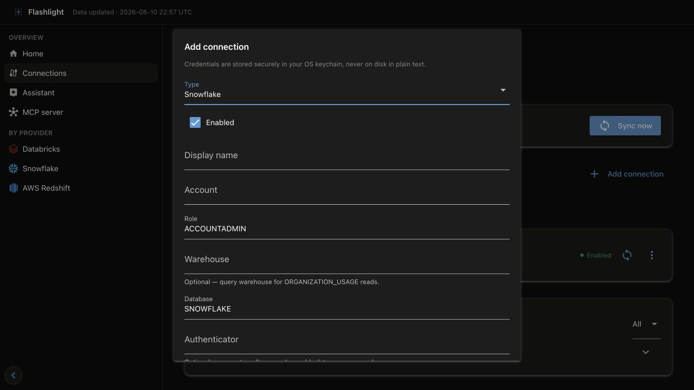
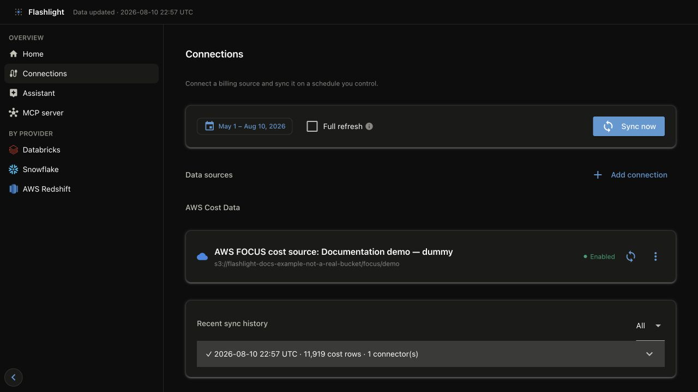
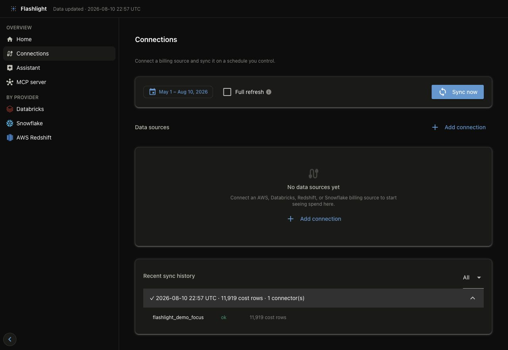
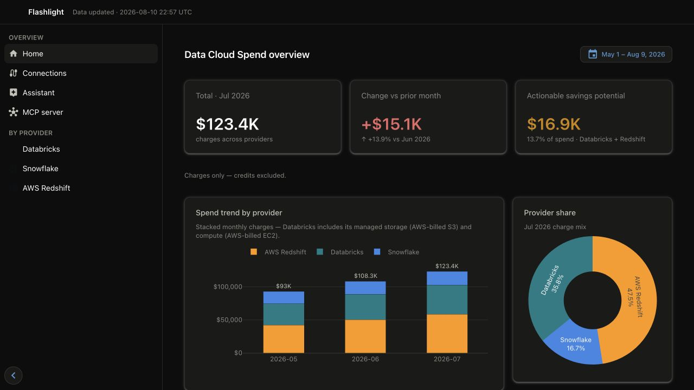

Connect a real source
The dashboard is the primary setup path. On Connections, you add a source, store its credentials securely, choose the period to pull, and inspect the result in one place. The example below uses a deliberately nonexistent S3 destination so you can see what is saved without exposing a real account or credential. Do not sync the example values.
1. Start at Connections
Launch the dashboard and open http://127.0.0.1:8501, then select Connections in the
left navigation. On a new lake, Flashlight creates its starter configuration when this page
first opens.
flashlight dashboard serve

Connections is the setup and operator surface: add a source first, then choose the window to pull and start a sync.
2. Add a source
Select Add connection, choose the provider, and complete its form. The example selects AWS FOCUS cost source, the preferred AWS cost path. Its display name and S3 destination are intentionally fake; the empty credential fields are intentional too.

What the AWS FOCUS fields mean
| Field | Required? | Why Flashlight needs it |
|---|---|---|
| Type | Yes | Selects the connector and its expected source. Choose AWS FOCUS cost source for an AWS Data Export, not for Redshift telemetry. |
| Enabled | Usually | Includes this connection in Sync now. Clear it to retain the definition without pulling it. |
| Display name | Recommended | Identifies the source in Connections, sync history, local provenance, and targeted sync actions. Use a stable, human-readable name. |
| Cost source | Yes | FOCUS export (S3) reads detailed FOCUS Parquet and is the recommended path. Cost Explorer is a less-detailed fallback. |
| S3 bucket | Yes for FOCUS export | Names the bucket that receives the AWS Data Export. Flashlight lists manifests and reads only the Parquet files they name. |
| S3 prefix | Yes for FOCUS export | Narrows access and tells Flashlight where the export root lives. It should match the export delivery path, not an unrelated parent bucket. |
| Region | Yes | Sets the AWS client and S3 region; the form starts with us-east-1. Use the region of the destination bucket/export setup. |
| AWS profile | Optional | Uses a named local AWS profile. When set, it takes precedence over the access-key fields. |
| Access key ID / Secret access key | Optional | A direct credential option when a profile or ambient AWS credential chain is not used. Enter them only into the secure fields; never put them in prose, screenshots, or connections.yml. |
The same principle applies to every connector: the saved connection describes where to read and the secret reference; secure fields store the secret outside the YAML file. Read the provider guide before saving a real source because it specifies the permissions, queries, and telemetry data involved.
Add Databricks, Redshift, or Snowflake
The same Add connection dialog changes its fields when you change Type. Add each source separately; an AWS FOCUS connection supplies AWS cost data, while Redshift is a telemetry connection and does not replace it.
| Type | Enter in the form | Optional choices | Before saving |
|---|---|---|---|
| Databricks | Display name, workspace host, personal access token | SQL warehouse ID | Use the workspace host (including https://). The warehouse ID limits the SQL endpoint used for system-table reads. |
| Redshift usage | Display name plus either direct host/database credentials or an IAM cluster/region path | AWS settings and an SSH tunnel | Select Test connection. The tabs expose only the connection method you need. |
| Snowflake | Display name, account, user, and password or key-pair details | Role, warehouse, database, authenticator, private key path | A warehouse is needed for ORGANIZATION_USAGE reads; use a role with only the documented grants. |



Every secret field in these forms is stored in the operating system's credential store, not
in connections.yml. The connector pages explain exactly which permissions are needed and
which queries the connection performs: Databricks,
Amazon Redshift, and Snowflake.
3. Save and confirm the source
Select Save. The connection appears in Data sources with its provider, display name, destination, and enabled state. This confirms that the local configuration was saved—it does not prove that the identity can read the cloud source.

This screenshot is a documentation fixture. flashlight-docs-example-not-a-real-bucket is
intentionally invalid, and no credentials were saved.
For a real source, use Test connection before the first sync when that action is offered (notably for Redshift). For AWS, confirm the bucket/prefix and IAM permissions in the AWS connector guide before pulling data.
4. Sync at least six months of real data
After replacing the dummy values with a real, permissioned source, choose a continuous window of at least the last six months in the Connections toolbar and select Sync now. This is the useful baseline for month-over-month changes, trends, and savings analysis. The sync dialog shows live output; the page records the final result in Recent sync history.
If you need to validate a new identity, use Test connection where it is available before the six-month sync. For an AWS FOCUS source, validate the bucket, prefix, and IAM policy from the AWS connector guide first; then sync the six-month window rather than treating a one-week pull as a complete setup.

Expand a history row to verify which connector ran and how many cost records it produced. Open a failed row's log before retrying.
Flashlight publishes data from successful connectors even when an independent connector fails. Treat a failed or partial sync as something to resolve before relying on a cross-provider total.
5. Verify the result
Use Home to confirm the selected period has data, then open the provider page to check the billing account, currency, scope, and total. Reconcile only matching periods and scope; see FOCUS and cost integrity for the rules.

The overview confirms that published metrics are available. Provider pages supply the detail needed to investigate a total.
Connector guides
| Source | Primary use | Permissions and query guide |
|---|---|---|
| AWS FOCUS Data Export | Canonical AWS cost data | AWS |
| Databricks system tables | Databricks cost and operational telemetry | Databricks |
| Amazon Redshift | Redshift efficiency telemetry; AWS provides its costs | Amazon Redshift |
| Snowflake | Organization cost and optional driver health | Snowflake |
CLI alternative
Use the CLI when the dashboard is unavailable or a scheduler owns the workflow. Initialize the starter files, supply secrets through the environment or your secret manager, and run a bounded ingest:
flashlight init
flashlight ingest --start 2026-07-01 --end 2026-07-31
The CLI and the dashboard use the same connection configuration and publish the same GOLD metrics. Read the CLI reference for automation-specific options.